- គណនាតម្លៃប្រហែលនៃផ្ទៃក្រឡាផ្នែកប្លង់តាមវិធីបំបែកជាចតុកោណកែង
- គណនាផ្ទៃក្រឡាផ្នែកប្លង់ខណ្ឌដោយក្រាបតាងអនុគមន៍ អ័ក្សអាប់ស៊ីស និងបន្ទាត់ឈរ
- គណនាផ្ទៃក្រឡាផ្នែកប្លង់ខណ្ឌដោយក្រាបតាងអនុគមន៍ពីរ ។
A. គណនាផ្ទៃក្រឡាតាមវិធីបំបែកជាចតុកោណកែង
ឧទាហរណ៍ 1 : \(\displaystyle f\) ជាអនុគមន៍ជាប់និងមិនអវិជ្ជមានលើចន្លោះ \(\displaystyle [0, 1]\) ហើយកំណត់ដោយ \(\displaystyle y = f(x) = x^{2} + 1\) និងមានក្រាប \(\displaystyle C\) ។ គណនាតម្លៃប្រហែលនៃផ្ទៃក្រឡាផ្នែកប្លង់ដែលខណ្ឌដោយក្រាប \(\displaystyle C\) និងអ័ក្សអាប់ស៊ីសត្រូវនឹងចន្លោះ \(\displaystyle [0, 1]\) ដោយចែកចន្លោះនេះជា \(\displaystyle n = 4\) ចន្លោះស្មើៗគ្នា រួចគណនាតាមផលបូកផ្ទៃក្រឡាចតុកោណកែងស្ថិតនៅខាងក្រោមក្រាប \(\displaystyle C\) (រូបទី 1) ។
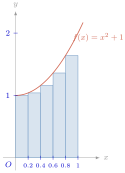
គេចែកចន្លោះ \(\displaystyle [0, 1]\) ជាបួនចន្លោះស្មើគ្នាដោយប្រើចំណុច \(\displaystyle x_{0} = 0\), \(\displaystyle x_{1} = \frac{1}{4}\), \(\displaystyle x_{2} = \frac{1}{2}\), \(\displaystyle x_{3} = \frac{3}{4}\), \(\displaystyle x_{4} = 1\) ។
ប្រវែងនៃចន្លោះតូចនីមួយៗគឺ \(\displaystyle \Delta x = \frac{1 - 0}{4} = \frac{1}{4}\) ។ គេសង់ចតុកោណកែងបួនដែលមានទទឹង \(\displaystyle \Delta x = \frac{1 - 0}{4} = \frac{1}{4}\) និងបណ្តោយរៀងគ្នា \(\displaystyle f(x_{0}), f(x_{1}), f(x_{2})\) និង \(\displaystyle f(x_{3})\) ។ ផលបូកនៃផ្ទៃក្រឡាចតុកោណកែងទាំងបួន
ដូច្នេះ \(\displaystyle \mathcal{A}_{4} = 1.21875\) ជាតម្លៃប្រហែលខ្វះបន្តិចនៃផ្ទៃក្រឡាផ្នែកប្លង់ដែលខណ្ឌដោយក្រាប \(\displaystyle C\) តាង \(\displaystyle y = f(x) = x^{2} + 1\) និងអ័ក្សអាប់ស៊ីសត្រូវនឹងចន្លោះ \(\displaystyle [0, 1]\) ។
ឧទាហរណ៍ 2 : \(\displaystyle f\) ជាអនុគមន៍ជាប់និងមិនអវិជ្ជមានលើចន្លោះ \(\displaystyle [0, 1]\) ហើយកំណត់ដោយ \(\displaystyle y = f(x) = x^{2} + 1\) និងមានក្រាប \(\displaystyle C\) ។ គណនាតម្លៃប្រហែលនៃផ្ទៃក្រឡាផ្នែកប្លង់ដែលខណ្ឌដោយក្រាប \(\displaystyle C\) និងអ័ក្សអាប់ស៊ីសត្រូវនឹងចន្លោះ \(\displaystyle [0, 1]\) ដោយចែកចន្លោះនេះជា \(\displaystyle n = 4\) ចន្លោះស្មើៗគ្នា រួចគណនាតាមផលបូកផ្ទៃក្រឡាចតុកោណកែងស្ថិតនៅខាងលើក្រាប \(\displaystyle C\) (រូបទី 2) ។
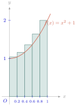
គេចែកចន្លោះ \(\displaystyle [0, 1]\) ជាបួនចន្លោះស្មើគ្នាដោយប្រើចំណុច \(\displaystyle x_{0} = 0\), \(\displaystyle x_{1} = \frac{1}{4}\), \(\displaystyle x_{2} = \frac{1}{2}\), \(\displaystyle x_{3} = \frac{3}{4}\), \(\displaystyle x_{4} = 1\) ។ ប្រវែងនៃចន្លោះតូចនីមួយៗគឺ \(\displaystyle \Delta x = \frac{1 - 0}{4} = \frac{1}{4}\) ។
គេសង់ចតុកោណកែងបួនដែលមានទទឹង \(\displaystyle \Delta x = \frac{1 - 0}{4} = \frac{1}{4}\) និងបណ្តោយរៀងគ្នា \(\displaystyle f(x_{1}), f(x_{2}), f(x_{3})\) និង \(\displaystyle f(x_{4})\) ។ ផលបូកនៃផ្ទៃក្រឡាចតុកោណកែងទាំងបួន
ដូច្នេះ \(\displaystyle \mathcal{A}_{4} = 1.46875\) ជាតម្លៃប្រហែលលើសបន្តិចនៃផ្ទៃក្រឡាផ្នែកប្លង់ដែលខណ្ឌដោយក្រាប \(\displaystyle C\) តាង \(\displaystyle y = f(x) = x^{2} + 1\) និងអ័ក្សអាប់ស៊ីសត្រូវនឹងចន្លោះ \(\displaystyle [0, 1]\) ។
ឧទាហរណ៍ 3 : \(\displaystyle f\) ជាអនុគមន៍ជាប់និងមិនអវិជ្ជមានលើចន្លោះ \(\displaystyle [0, 1]\) ហើយកំណត់ដោយ \(\displaystyle y = f(x) = x^{2} + 1\) និងមានក្រាប \(\displaystyle C\) ។ គណនាតម្លៃប្រហែលនៃផ្ទៃក្រឡាផ្នែកប្លង់ដែលខណ្ឌដោយក្រាប \(\displaystyle C\) និងអ័ក្សអាប់ស៊ីសត្រូវនឹងចន្លោះ \(\displaystyle [0, 1]\) ដោយចែកចន្លោះនេះជា \(\displaystyle n = 4\) ចន្លោះស្មើៗគ្នា រួចគណនាតាមផលបូកផ្ទៃក្រឡាចតុកោណកែង (ដូចរូបទី 3) ។
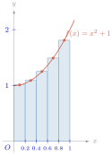
គេចែកចន្លោះ \(\displaystyle [0, 1]\) ជាបួនចន្លោះស្មើគ្នាដោយប្រើចំណុច \(\displaystyle x_{0} = 0\), \(\displaystyle x_{1} = \frac{1}{4}\), \(\displaystyle x_{2} = \frac{1}{2}\), \(\displaystyle x_{3} = \frac{3}{4}\), \(\displaystyle x_{4} = 1\) ។ ប្រវែងនៃចន្លោះតូចនីមួយៗគឺ \(\displaystyle \Delta x = \frac{1 - 0}{4} = \frac{1}{4}\) ។ បើគេជ្រើសរើសតម្លៃ \(\displaystyle c_{1}, c_{2}, c_{3}, c_{4}\) ដែលជាតម្លៃកណ្តាលនៃចន្លោះនីមួយៗ
បើគេសង់ចតុកោណកែងបួនដែលមានទទឹង \(\displaystyle \Delta x = \frac{1 - 0}{4} = \frac{1}{4}\) និងបណ្តោយរៀងគ្នា \(\displaystyle f(c_{1}), f(c_{2}), f(c_{3})\) និង \(\displaystyle f(c_{4})\) នោះគេបានផលបូកនៃផ្ទៃក្រឡាចតុកោណកែងទាំងនោះគឺ
ដូច្នេះ \(\displaystyle \mathcal{A}_{4} = 1.328125\) ជាតម្លៃប្រហែលនៃផ្ទៃក្រឡាផ្នែកប្លង់ដែលខណ្ឌដោយក្រាប \(\displaystyle C\) តាង \(\displaystyle y = f(x) = x^{2} + 1\) និងអ័ក្សអាប់ស៊ីសត្រូវនឹងចន្លោះ \(\displaystyle [0, 1]\) ។
ព្រីមីទីវនៃ \(\displaystyle y = x^{2} + 1\) គឺ \(\displaystyle F(x) = \frac{x^{3}}{3} + x + c\) ដែល \(\displaystyle c\) ជាចំនួនពិតថេរ គេបាន \(\displaystyle F(1) - F(0) = \frac{4}{3} \approx 1.3333\) គេសង្កេតឃើញថា \(\displaystyle \mathcal{A}_{4} \approx F(1) - F(0)\) ។
B. ផ្ទៃក្រឡាតាមអាំងតេក្រាលកំណត់
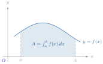
គេឱ្យអនុគមន៍ \(\displaystyle y = f(x)\) ជាអនុគមន៍ជាប់និងមានតម្លៃវិជ្ជមានលើចន្លោះ \(\displaystyle [a, b]\) ។ គណនាផ្ទៃក្រឡាផ្នែកប្លង់ដែលខណ្ឌដោយក្រាបតាង \(\displaystyle y = f(x)\) អ័ក្សអាប់ស៊ីស បន្ទាត់ឈរ \(\displaystyle x = a\) និង \(\displaystyle x = b\) ។
គេចែកអង្កត់ \(\displaystyle [a, b]\) ជា \(\displaystyle n\) ចំណែកស្មើគ្នាដោយស្វ៊ីតចំណុចដូចខាងក្រោម ៖ \(\displaystyle a = x_{0} < x_{1} < x_{2} < \dots < x_{n-1} < x_{n} = b\) ដែល \(\displaystyle \Delta x = x_{i} - x_{i-1} = \frac{b - a}{n}\) (\(\displaystyle i = 1, 2, 3, \dots, n\)) ។ គេបានផលបូកនៃផ្ទៃក្រឡាចតុកោណកែងទាំងអស់គឺ
ដែល \(\displaystyle \mathcal{A}_{n}\) ជាផលបូកផ្ទៃក្រឡានៃចតុកោណកែងមានទទឹង \(\displaystyle \Delta x\) និងបណ្តោយ \(\displaystyle f(x_{k})\) នៅលើ \(\displaystyle [a, b]\) ។ បើ \(\displaystyle n \to +\infty\) នោះផលបូក \(\displaystyle \sum_{k=1}^{n} f(x_{k}) \cdot \Delta x\) ខិតទៅរកចំនួនកំណត់ \(\displaystyle \mathcal{A}\) មួយដែលជាផ្ទៃក្រឡាផ្នែកប្លង់ខណ្ឌដោយក្រាប \(\displaystyle C\) នៃ \(\displaystyle f\) អ័ក្សអាប់ស៊ីស បន្ទាត់ឈរ \(\displaystyle x = a\) និង \(\displaystyle x = b\) ។ ដូច្នេះ \(\displaystyle \lim_{n \to +\infty} \mathcal{A}_{n} = \mathcal{A}\) ។
តាង \(\displaystyle \Delta \mathcal{A}\) ជាផ្ទៃក្រឡានៅចន្លោះខ្សែកោង \(\displaystyle C : y = f(x)\) និងអ័ក្សអាប់ស៊ីសដែលត្រូវនឹងកំណើន \(\displaystyle \Delta x\) នៃអាប់ស៊ីស ។ \(\displaystyle \Delta \mathcal{A}\) មានតម្លៃនៅចន្លោះផ្ទៃក្រឡាចតុកោណកែងក្នុង និងចតុកោណកែងក្រៅ គេបាន \(\displaystyle \Delta x \cdot f(x) < \Delta \mathcal{A} < \Delta x \cdot f(x + \Delta x)\)
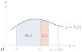
ឬ \(\displaystyle f(x) < \frac{\Delta \mathcal{A}}{\Delta x} < f(x + \Delta x)\) ។ កាលណា \(\displaystyle \Delta x\) ខិតទៅជិត \(\displaystyle 0\) គេបាន \(\displaystyle \lim_{\Delta x \to 0} f(x + \Delta x) = f(x)\) ។ ដូច្នេះ \(\displaystyle \lim_{\Delta x \to 0} \frac{\Delta \mathcal{A}}{\Delta x} = f(x)\) ឬ \(\displaystyle \mathcal{A}'(x) = f(x)\) ។ \(\displaystyle \mathcal{A}'(x) = f(x)\) មានន័យថា \(\displaystyle \mathcal{A}(x)\) ជាព្រីមីទីវមួយនៃ \(\displaystyle f(x)\) ។ បើ \(\displaystyle F(x)\) ជាព្រីមីទីវមួយនៃ \(\displaystyle f(x)\) នោះ \(\displaystyle \mathcal{A}(x) = F(x) + c\), \(\displaystyle c\) ជាចំនួនពិតថេរ ។ ចំពោះ \(\displaystyle x = a\), \(\displaystyle \mathcal{A}(a) = 0\) ហើយ \(\displaystyle 0 = F(a) + c\) ឬ \(\displaystyle c = -F(a)\) ។ គេបាន \(\displaystyle \mathcal{A}(x) = F(x) - F(a)\) ។ បើ \(\displaystyle x\) ប្រែប្រួលពី \(\displaystyle a\) ទៅ \(\displaystyle b\) នោះ \(\displaystyle \mathcal{A} = F(b) - F(a)\) ជាផ្ទៃក្រឡានៅចន្លោះខ្សែកោង \(\displaystyle C : y = f(x)\) និងអ័ក្សអាប់ស៊ីសត្រូវនឹង \(\displaystyle x \in [a, b]\) ។ ដូច្នេះ \(\displaystyle \lim_{n \to +\infty} \mathcal{A}_{n} = \mathcal{A} = F(b) - F(a)\) ។ គេកំណត់តាងផលដក \(\displaystyle F(b) - F(a) = \int_{a}^{b} f(x)dx\) ហៅថា អាំងតេក្រាលកំណត់ពី \(\displaystyle a\) ទៅ \(\displaystyle b\) នៃ \(\displaystyle y = f(x)\) ។
និយមន័យ \(\displaystyle f\) ជាអនុគមន៍ជាប់លើចន្លោះ \(\displaystyle [a, b]\) ។ \(\displaystyle \int_{a}^{b} f(x)dx = F(b) - F(a)\) ហៅថា អាំងតេក្រាលកំណត់ពី \(\displaystyle a\) ទៅ \(\displaystyle b\) នៃ \(\displaystyle y = f(x)\) ។
ផ្ទៃក្រឡា \(\displaystyle f\) ជាអនុគមន៍ជាប់និងវិជ្ជមាន ឬ \(\displaystyle 0\) លើចន្លោះ \(\displaystyle [a, b]\) ។ ផ្ទៃក្រឡាខណ្ឌដោយខ្សែកោង \(\displaystyle C\) តាង \(\displaystyle f\) អ័ក្សអាប់ស៊ីស បន្ទាត់ឈរ \(\displaystyle x = a\) និង \(\displaystyle x = b\) កំណត់ដោយ \(\displaystyle \mathcal{A} = \int_{a}^{b} f(x)dx = [F(x)]_{a}^{b} = F(b) - F(a)\) ។
ដោយប្រើនិយមន័យខាងលើ គណនា \(\displaystyle I = \int_{0}^{1} x^{2}dx\) ។
\(\displaystyle I = \int_{0}^{1} x^{2}dx = \left[\frac{x^{3}}{3}\right]_{0}^{1} = \frac{1^{3}}{3} - \frac{0^{3}}{3} = \frac{1}{3}\) ។
រកផ្ទៃក្រឡានៃផ្នែកប្លង់ខណ្ឌដោយខ្សែកោង \(\displaystyle C : y = \frac{1}{x}\), អ័ក្សអាប់ស៊ីស, បន្ទាត់ឈរ \(\displaystyle x = 1\) និង \(\displaystyle x = e\) ។
ចំពោះគ្រប់ \(\displaystyle x \in [1, e]\), \(\displaystyle y = \frac{1}{x} > 0\) នោះ ៖ ផ្ទៃក្រឡា \(\displaystyle \mathcal{A} = \int_{1}^{e} \frac{1}{x}dx = [\ln|x|]_{1}^{e} = \ln e - \ln 1 = 1\) ឯកតាផ្ទៃក្រឡា ។
C. ផ្ទៃក្រឡាខណ្ឌដោយក្រាបតាងអនុគមន៍ អ័ក្សអាប់ស៊ីស និងបន្ទាត់ឈរ
ឧទាហរណ៍ 1 : គណនាផ្ទៃក្រឡាផ្នែកប្លង់ខណ្ឌដោយក្រាបតាងអនុគមន៍ \(\displaystyle y = f(x) = 4 - x^{2}\) និងអ័ក្សអាប់ស៊ីសត្រូវនឹងចន្លោះ \(\displaystyle [-2, 2]\) ។
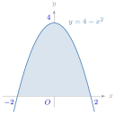
ចំពោះគ្រប់ \(\displaystyle x \in [-2, 2]\), \(\displaystyle f(x) = 4 - x^{2} \ge 0\) នោះផ្ទៃក្រឡា \(\displaystyle \mathcal{A} = \int_{-2}^{2} f(x)dx = \int_{-2}^{2} (4 - x^{2})dx\) ដោយប្រើនិយមន័យ គេបាន \(\displaystyle \left[4x - \frac{x^{3}}{3}\right]_{-2}^{2} = 4 \times 2 - \frac{8}{3} + 8 - \frac{8}{3} = \frac{32}{3}\) ដូច្នេះ ផ្ទៃក្រឡា \(\displaystyle \mathcal{A} = \frac{32}{3}\) ឯកតាផ្ទៃក្រឡា ។
បើគេមានអនុគមន៍ \(\displaystyle y = f(x) \le 0\) និងជាប់លើចន្លោះ \(\displaystyle [a, b]\) នោះគ្រប់ \(\displaystyle x \in [a, b]\), \(\displaystyle -f(x) \ge 0\) ។ គេបានផ្ទៃក្រឡាខណ្ឌដោយក្រាប \(\displaystyle C\) តាងអនុគមន៍ \(\displaystyle y = f(x)\) និងអ័ក្សអាប់ស៊ីសត្រូវនឹងចន្លោះ \(\displaystyle [a, b]\) គឺ \(\displaystyle \mathcal{A} = -\int_{a}^{b} f(x)dx\) ។
ឧទាហរណ៍ 2 : គណនាផ្ទៃក្រឡាផ្នែកប្លង់ខណ្ឌដោយក្រាប \(\displaystyle C\) តាងអនុគមន៍ \(\displaystyle y = -\sqrt{x - 2}\) និងអ័ក្សអាប់ស៊ីសលើចន្លោះ \(\displaystyle [2, 6]\) ។
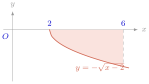
ផ្ទៃក្រឡា \(\displaystyle \mathcal{A}\) ដែលត្រូវគណនានោះគឺ
ដូច្នេះ ផ្ទៃក្រឡា \(\displaystyle \mathcal{A} = \frac{16}{3}\) ឯកតាផ្ទៃក្រឡា ។
បើអនុគមន៍ \(\displaystyle y = f(x)\) ជាប់លើចន្លោះ \(\displaystyle [a, b]\) នោះផ្ទៃក្រឡានៃផ្នែកប្លង់ដែលខណ្ឌដោយខ្សែកោង អ័ក្សអាប់ស៊ីស បន្ទាត់ឈរ \(\displaystyle x = a\) និង \(\displaystyle x = b\) កំណត់ដោយ \(\displaystyle \mathcal{A} = \int_{a}^{b} f(x)dx\) បើ \(\displaystyle f(x) \ge 0\) ឬ \(\displaystyle \mathcal{A} = -\int_{a}^{b} f(x)dx\) បើ \(\displaystyle f(x) \le 0\) ។
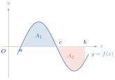
គណនាផ្ទៃក្រឡាខណ្ឌដោយក្រាបតាងអនុគមន៍ \(\displaystyle y = 4 - x^{2}\) និងអ័ក្សអាប់ស៊ីសត្រូវនឹងចន្លោះ \(\displaystyle [-2, 3]\) ។
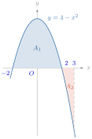
ក្រាប \(\displaystyle C\) តាង \(\displaystyle y = 4 - x^{2}\) កាត់អ័ក្សអាប់ស៊ីសត្រង់ \(\displaystyle x = -2\) និង \(\displaystyle x = 2\) ។ គេបាន
ដូច្នេះ ផ្ទៃក្រឡា \(\displaystyle \mathcal{A} = 13\) ឯកតាផ្ទៃក្រឡា ។
- ក. គណនាផ្ទៃក្រឡានៃផ្នែកប្លង់ដែលខណ្ឌដោយក្រាបតាងអនុគមន៍ \(\displaystyle y = x^{2} + 3x + 2\) និងអ័ក្សអាប់ស៊ីសត្រូវនឹងចន្លោះ \(\displaystyle [-3, 0]\) ។
- ខ. គណនាផ្ទៃក្រឡានៃផ្នែកប្លង់ដែលខណ្ឌដោយក្រាបតាងអនុគមន៍ \(\displaystyle y = \frac{3}{x + 2}\) និងអ័ក្សអាប់ស៊ីសត្រូវនឹងចន្លោះ \(\displaystyle [-1, 3]\) ។
មើលចម្លើយ
- ក. \(\displaystyle \mathcal{A} = \frac{11}{6}\)
- ខ. \(\displaystyle \mathcal{A} = 3\ln 5\) ។
D. ផ្ទៃក្រឡាខណ្ឌដោយក្រាបពីរ
ឧទាហរណ៍ : គណនាផ្ទៃក្រឡានៃផ្នែកប្លង់ដែលខណ្ឌដោយក្រាបតាងអនុគមន៍ \(\displaystyle y = f(x) = 4 - \frac{x^{2}}{2}\) និង \(\displaystyle y = g(x) = x\), \(\displaystyle 0 \le x \le 2\) ។
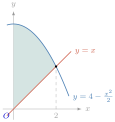
តាមក្រាបគេបានផ្ទៃក្រឡាខណ្ឌដោយក្រាបតាងអនុគមន៍ \(\displaystyle y = f(x) = 4 - \frac{x^{2}}{2}\) និង \(\displaystyle y = g(x) = x\), \(\displaystyle 0 \le x \le 2\) ស្មើនឹងផ្ទៃក្រឡាខណ្ឌដោយក្រាបតាងអនុគមន៍ \(\displaystyle y = f(x) = 4 - \frac{x^{2}}{2}\) និងអ័ក្ស \(\displaystyle x'Ox\) ដកនឹងផ្ទៃក្រឡាខណ្ឌដោយក្រាបតាងអនុគមន៍ \(\displaystyle y = g(x) = x\) និងអ័ក្ស \(\displaystyle x'Ox\) ។
\(\displaystyle \mathcal{A} = \frac{14}{3}\) ឯកតាផ្ទៃក្រឡា ។ \(\displaystyle \mathcal{A}_{1} = \int_{0}^{2} f(x)dx = \int_{0}^{2} \left(4 - \frac{x^{2}}{2}\right)dx = \left[4x - \frac{x^{3}}{6}\right]_{0}^{2} = 8 - \frac{8}{6} = \frac{20}{3}\) ឯកតាផ្ទៃក្រឡា ។ \(\displaystyle \mathcal{A}_{2} = \int_{0}^{2} g(x)dx = \int_{0}^{2} x\,dx = \left[\frac{x^{2}}{2}\right]_{0}^{2} = 2\) ឯកតាផ្ទៃក្រឡា ។ នោះ \(\displaystyle \mathcal{A}_{1} - \mathcal{A}_{2} = \int_{0}^{2} f(x)dx - \int_{0}^{2} g(x)dx = \frac{20}{3} - 2 = \frac{14}{3} = \mathcal{A}\) ។ ដូច្នេះ \(\displaystyle \mathcal{A} = \int_{0}^{2} [f(x) - g(x)]dx = \int_{0}^{2} f(x)dx - \int_{0}^{2} g(x)dx = \frac{14}{3}\) ឯកតាផ្ទៃក្រឡា ។
បើ \(\displaystyle f\) និង \(\displaystyle g\) ជាអនុគមន៍ជាប់លើចន្លោះ \(\displaystyle [a, b]\) ដែល \(\displaystyle f(x) \ge g(x)\) នោះគេបានផ្ទៃក្រឡានៅចន្លោះខ្សែកោង តាងអនុគមន៍ទាំងពីរ បន្ទាត់ឈរ \(\displaystyle x = a\) និង \(\displaystyle x = b\) កំណត់ដោយ \(\displaystyle \mathcal{A} = \int_{a}^{b} [f(x) - g(x)]dx\) ។ បើក្រាបតាងអនុគមន៍ \(\displaystyle f\) និង \(\displaystyle g\) ប្រសព្វគ្នាត្រង់ចំណុច \(\displaystyle x = a\) និងចំណុច \(\displaystyle x = b\) នោះ គេបានផ្ទៃក្រឡានៃផ្នែកប្លង់ដែលនៅចន្លោះខ្សែកោងទាំងពីរ កំណត់ដោយ \(\displaystyle \mathcal{A} = \int_{a}^{b} [g(x) - f(x)]dx\) ដែល \(\displaystyle f(x) \le g(x)\) ។
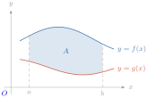
គណនាផ្ទៃក្រឡានៃផ្នែកប្លង់ដែលខណ្ឌដោយប៉ារ៉ាបូល \(\displaystyle P : y = x^{2} + 2x\) និងបន្ទាត់ \(\displaystyle d : y = x + 2\) ។
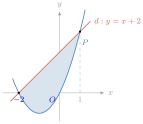
គណនាផ្ទៃក្រឡា \(\displaystyle \mathcal{A}\) សមីការអាប់ស៊ីសរវាង \(\displaystyle P\) និង \(\displaystyle d\) គឺ \(\displaystyle x^{2} + 2x = x + 2 \iff x^{2} + x - 2 = 0\) មានឫស \(\displaystyle x = 1\), \(\displaystyle x = -2\) ។ ដោយ \(\displaystyle P\) និង \(\displaystyle d\) ប្រសព្វគ្នាត្រង់ \(\displaystyle x = -2\) និង \(\displaystyle x = 1\) ហើយបន្ទាត់ \(\displaystyle d\) ស្ថិតនៅពីខាងលើប៉ារ៉ាបូល \(\displaystyle P\) ចំពោះគ្រប់ \(\displaystyle x \in [-2, 1]\) នោះគេបានផ្ទៃក្រឡាដែលកំណត់ដោយ \(\displaystyle P\) និង \(\displaystyle d\) គឺ
ដូច្នេះ \(\displaystyle \mathcal{A} = \frac{9}{2}\) ឯកតាផ្ទៃក្រឡា ។
គណនាផ្ទៃក្រឡាផ្នែកនៃប្លង់ដែលខណ្ឌដោយ \(\displaystyle P : y = x^{2} - 3x + 2\), \(\displaystyle d : y = x - 1\), បន្ទាត់ឈរ \(\displaystyle x = 0\) និង \(\displaystyle x = 2\) ។
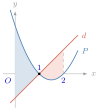
គណនាផ្ទៃក្រឡា \(\displaystyle \mathcal{A}\) សមីការអាប់ស៊ីសនៃចំណុចប្រសព្វរវាង \(\displaystyle P\) និង \(\displaystyle d\) គឺ \(\displaystyle x^{2} - 3x + 2 = x - 1 \iff x^{2} - 4x + 3 = 0 \iff (x - 1)(x - 3) = 0\) មានឫស \(\displaystyle x = 1\) និង \(\displaystyle x = 3\) ។ ដូច្នេះ ផ្ទៃក្រឡា \(\displaystyle \mathcal{A}\) គឺ
ដូច្នេះ ផ្ទៃក្រឡា \(\displaystyle \mathcal{A} = 2\) ឯកតាផ្ទៃក្រឡា ។
- ក. គណនាផ្ទៃក្រឡានៃផ្នែកប្លង់ដែលខណ្ឌដោយក្រាបតាងអនុគមន៍ \(\displaystyle y = x^{3}\) និង \(\displaystyle y = x^{2} + 1\) លើចន្លោះ \(\displaystyle [-1, 1]\) ។
- ខ. គណនាផ្ទៃក្រឡានៃផ្នែកប្លង់ដែលខណ្ឌដោយក្រាបតាង \(\displaystyle y = x^{3}\) និងបន្ទាត់ \(\displaystyle y = 4x\) ។
មើលចម្លើយ
- ក. \(\displaystyle \frac{8}{3}\)
- ខ. \(\displaystyle 8\) ។
លំហាត់
ដោយប្រើនិយមន័យគណនាអាំងតេក្រាលខាងក្រោម ៖
- ក. \(\displaystyle \int_{0}^{2} 3x\,dx\)
- ខ. \(\displaystyle \int_{2}^{4} 4x\,dx\)
- គ. \(\displaystyle \int_{0}^{2} x^{2}\,dx\)
- ឃ. \(\displaystyle \int_{0}^{2} (x^{2} - 5x)\,dx\)
- ង. \(\displaystyle \int_{1}^{2} x^{2}\,dx\) ។
គណនាតម្លៃប្រហែលនៃផ្ទៃក្រឡាដែលខណ្ឌដោយក្រាបតាង \(\displaystyle y = f(x)\) និងអ័ក្ស \(\displaystyle x'Ox\) លើចន្លោះ \(\displaystyle [a, b]\) ដែល
- ក. \(\displaystyle f(x) = 9 - x^{2}\) ដែល \(\displaystyle [a, b] = [-3, 2]\), \(\displaystyle n = 5\)
- ខ. \(\displaystyle f(x) = \frac{1}{x + 2}\) ដែល \(\displaystyle [a, b] = [-1, 3]\), \(\displaystyle n = 4\) ។
គណនាផ្ទៃក្រឡាខណ្ឌដោយក្រាបតាងអនុគមន៍ និងអ័ក្សអាប់ស៊ីសលើចន្លោះដែលឱ្យ
- ក. \(\displaystyle f(x) = x^{2}\) ដែល \(\displaystyle x \in [1, 3]\)
- ខ. \(\displaystyle f(x) = x^{2} + 2x - 3\) ដែល \(\displaystyle x \in [1, 3]\)
- គ. \(\displaystyle f(x) = 2 - x^{3}\) ដែល \(\displaystyle x \in [-3, -2]\)
- ឃ. \(\displaystyle f(x) = \frac{3}{2x + 1}\) ដែល \(\displaystyle x \in [0, 2]\) ។
គណនាផ្ទៃក្រឡាដែលខណ្ឌដោយក្រាបតាងអនុគមន៍ទាំងពីរ ៖
- ក. \(\displaystyle f(x) = x^{2} + 2\) និង \(\displaystyle g(x) = x\), \(\displaystyle x \in [2, 5]\)
- ខ. \(\displaystyle f(x) = x^{2}\) និង \(\displaystyle g(x) = x^{3}\), \(\displaystyle x \in [0, 1]\)
- គ. \(\displaystyle f(x) = \sqrt{2x + 1}\) និង \(\displaystyle g(x) = 3x + 2\), \(\displaystyle x \in [0, 2]\)
- ឃ. \(\displaystyle f(x) = e^{x - 1}\) និង \(\displaystyle g(x) = x\), \(\displaystyle x \in [1, 4]\) ។
- គណនាផ្ទៃក្រឡាខណ្ឌដោយខ្សែកោងតាងអនុគមន៍ \(\displaystyle x = y^{2}\) និង \(\displaystyle y = x - 2\) ។
- គណនាផ្ទៃក្រឡានៃផ្នែកប្លង់ដែលខណ្ឌដោយក្រាបតាងអនុគមន៍ \(\displaystyle f(x) = \sin\frac{\pi}{2}x\) និង \(\displaystyle g(x) = x^{4}\) ។
- គណនាផ្ទៃក្រឡានៃផ្នែកប្លង់ដែលខណ្ឌដោយក្រាបតាងអនុគមន៍ \(\displaystyle f(x) = \sin^{3}x\) និង \(\displaystyle g(x) = \cos^{3}x\) លើចន្លោះ \(\displaystyle \left[\frac{\pi}{4}, \frac{5\pi}{4}\right]\) ។
តាង \(\displaystyle C\) ជាក្រាបតាងអនុគមន៍ \(\displaystyle y = e^{2x} - 1\) និង \(\displaystyle l\) ជាបន្ទាត់ប៉ះក្រាប \(\displaystyle C\) ត្រង់ចំណុច \(\displaystyle p(1, e)\)
- ក. រកសមីការបន្ទាត់ \(\displaystyle l\) ។
- ខ. រកផ្ទៃក្រឡា \(\displaystyle \mathcal{A}\) ដែលខណ្ឌដោយក្រាប \(\displaystyle C\) បន្ទាត់ \(\displaystyle l\) និងអ័ក្សអាប់ស៊ីស ។
ចម្លើយលំហាត់
- 1. ក. \(\displaystyle \left[\frac{3}{2}x^{2}\right]_{0}^{2} = 6\) ។ ខ. \(\displaystyle [2x^{2}]_{2}^{4} = 24\) ។ គ. \(\displaystyle \left[\frac{x^{3}}{3}\right]_{0}^{2} = \frac{8}{3}\) ។ ឃ. \(\displaystyle \left[\frac{x^{3}}{3} - \frac{5}{2}x^{2}\right]_{0}^{2} = -\frac{22}{3}\) ។ ង. \(\displaystyle \left[\frac{x^{3}}{3}\right]_{1}^{2} = \frac{7}{3}\) ។
- 2. ក. \(\displaystyle \Delta x = 1\) : ផលបូកចតុកោណកែងខាងឆ្វេង \(\displaystyle = f(-3)+f(-2)+f(-1)+f(0)+f(1) = 30\), ខាងស្ដាំ \(\displaystyle = 35\), ចំណុចកណ្តាល \(\displaystyle = 33.75\) ។ ខ. \(\displaystyle \Delta x = 1\) : ខាងឆ្វេង \(\displaystyle = 1+\frac{1}{2}+\frac{1}{3}+\frac{1}{4} = \frac{25}{12}\), ខាងស្ដាំ \(\displaystyle = \frac{1}{2}+\frac{1}{3}+\frac{1}{4}+\frac{1}{5} = \frac{77}{60}\), ចំណុចកណ្តាល \(\displaystyle = \frac{496}{315}\) ។
- 3. ក. \(\displaystyle \int_{1}^{3} x^{2}dx = \frac{26}{3}\) ។ ខ. \(\displaystyle \int_{1}^{3} (x^{2}+2x-3)dx = \frac{32}{3}\) ។ គ. \(\displaystyle \int_{-3}^{-2} (2-x^{3})dx = \frac{73}{4}\) ។ ឃ. \(\displaystyle \int_{0}^{2} \frac{3}{2x+1}dx = \frac{3}{2}\ln 5\) ។
- 4. ក. \(\displaystyle \int_{2}^{5} (x^{2}+2-x)dx = \frac{69}{2}\) ។ ខ. \(\displaystyle \int_{0}^{1} (x^{2}-x^{3})dx = \frac{1}{12}\) ។ គ. \(\displaystyle \int_{0}^{2} (3x+2-\sqrt{2x+1})dx = \frac{31 - 5\sqrt{5}}{3}\) ។ ឃ. \(\displaystyle \int_{1}^{4} (e^{x-1}-x)dx = e^{3} - \frac{17}{2}\) ។
- 5. ចំណុចប្រសព្វ \(\displaystyle y^{2} = y + 2 \implies y = -1, 2\) ។ \(\displaystyle \mathcal{A} = \int_{-1}^{2} (y + 2 - y^{2})dy = \frac{9}{2}\) ។
- 6. ក្រាបប្រសព្វគ្នាត្រង់ \(\displaystyle x = 0\) និង \(\displaystyle x = 1\) ។ \(\displaystyle \mathcal{A} = \int_{0}^{1} \left(\sin\frac{\pi}{2}x - x^{4}\right)dx = \frac{2}{\pi} - \frac{1}{5} = \frac{10 - \pi}{5\pi}\) ។
- 7. លើ \(\displaystyle \left[\frac{\pi}{4}, \frac{5\pi}{4}\right]\), \(\displaystyle \sin x \ge \cos x\) ។ \(\displaystyle \mathcal{A} = \int_{\frac{\pi}{4}}^{\frac{5\pi}{4}} (\sin^{3}x - \cos^{3}x)dx = \frac{5\sqrt{2}}{3}\) ។
- 8. (សម្គាល់៖ ដើម្បីឱ្យចំណុច \(\displaystyle p(1, e)\) នៅលើក្រាប \(\displaystyle C\), សមីការគួរតែជា \(\displaystyle y = e^{2x-1}\)) ក. \(\displaystyle y' = 2e^{2x-1} \implies y'(1) = 2e\), សមីការបន្ទាត់ \(\displaystyle l : y = 2ex - e\) ។ ខ. \(\displaystyle l\) កាត់អ័ក្ស \(\displaystyle Ox\) ត្រង់ \(\displaystyle x = \frac{1}{2}\) ; \(\displaystyle \mathcal{A} = \int_{0}^{1} e^{2x-1}dx - \frac{1}{2}\left(\frac{1}{2}\right)e = \frac{e}{4} - \frac{1}{2e}\) ។
ខ្លឹមសារ៖ សៀវភៅពុម្ពគណិតវិទ្យាថ្នាក់ទី១២ របស់ក្រសួងអប់រំ យុវជន និងកីឡា · វាយអត្ថបទ គូររូបភាពឡើងវិញ និងរៀបចំលើអនឡាញដោយលោកគ្រូ សាន សុខលី សម្រាប់ការសិក្សាដោយឥតគិតថ្លៃ និងមិនរកប្រាក់ចំណេញ។ មិនមែនជាការបោះពុម្ពផ្លូវការរបស់ក្រសួងទេ។